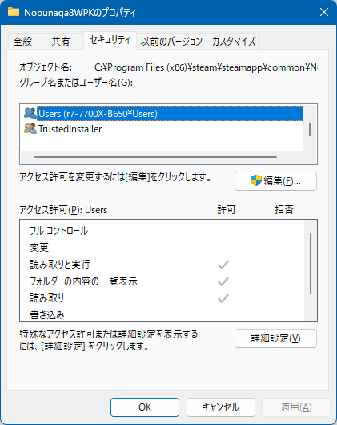
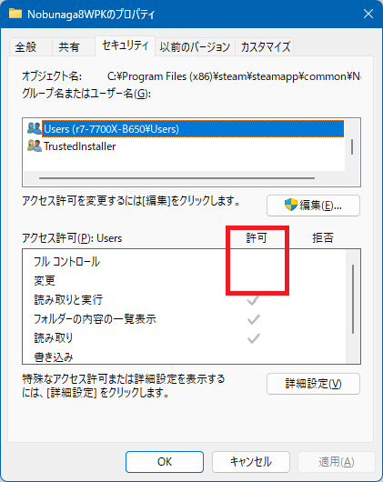
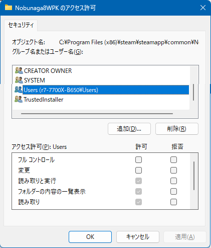
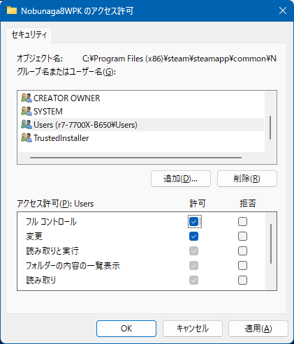

烈風伝.mod は ゲームフォルダ内のファイルを「ご自身で編集する」という側面を持ちます。
このため、もしも steam を 「Program Files(x86)」などUAC(ユーザーアカウント制御)下のフォルダに配置しているのであれば、
一部設定を緩める必要があります。
UACフォルダは「そこでは編集作業はしない」という前提のフォルダに対して設定されているもので、
編集作業をするのであれば、UAC制限はただ作業を阻害するだけのものとなるためです。
このページの説明は無関係です、「次のページ」に進んでください。
この設定が必須となります。
烈風伝のフォルダのUAC制限を解除してください。
烈風伝は「Nobunaga8WPK」というフォルダにインストールされています。
この「Nobunaga8WPK」のフォルダの「プロパティ」の「セキュリティ」から、
 
「アクセス許可を変更するには[編集]をクリックします」で「編集」を押して、
ご自身の「ログイン時のアカウント名を改めて選択」し、
「フルコントロール」と「変更」にチェックを入れてください。
 
ご自身の「ログイン時のアカウント名をちゃんと選択」していましたか？
ユーザーインターフェイスの順番の問題で「選択していた」と勘違いしやすいので、注意してください。
Nobunaga8WPK フォルダ以下が、特別な制限があるフォルダではなく、
「そのら辺にある普通のフォルダと同じ」ようになったということとなります。